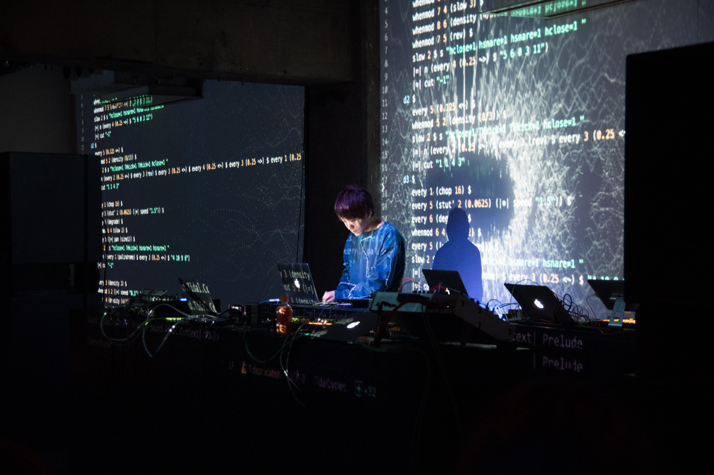
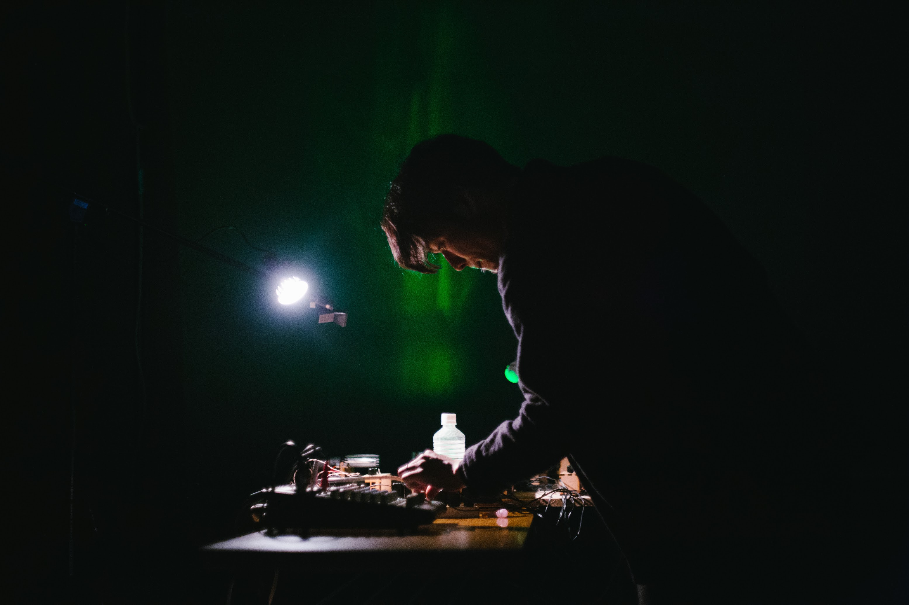

Ai.stepは、Kakuya ShiraishiとScott Allenによるユニットです。人間のパフォーマーと機械学習に基づく「AI」が共にライブコーディングを行い、演奏及びデータビジュアライズのパフォーマンスを行います。演奏では、音響合成プログラミング言語であるTidalCyclesのコード生成と記述の部分に、ディープラーニングを使用します。パフォーマンス中、AIは画面上のエディターに表示されるコードを生成しています。そこから生まれる演奏情報を聞き、パフォーマーが音色を選定していきます。AIの生成結果を人間がナビゲートすることで、人間とAIの間の相互補完をライブコーディングを通じて実現します。データビジュアライゼーションでは、AIが生成する音色の情報、パフォーマーのアクション、両者の関係性を視覚的に表現します。
Ai.step is a performance unit consisting of Kakuya Shiraishi and Scott Allen. Audio live coding and data visualization are performed by an "AI" based on machine learning and a human live coder. In this performance, deep learning is used for the code generation and writing of the sound synthesis programming language TidalCycles. During performance, the AI generates code to be displayed in the editor on the screen. The performer will select the tone generated by the AI. In this way, mutual complementation between human and AI is realized through live coding. In the data visualization, graphics are visually expressed using the information of the tone generated by the AI, the action of the performer, and the relationship between them.
Kakuya Shiraishi

群馬工業高等専門学校電子情報工学科卒業。多摩美術大学情報デザイン学科情報デザインコース卒業。情報科学芸術大学院大学メディア表現研究科在学。主に、グラフィックス、サウンド、映像、画像、フォント、アルゴリズム、Webなどを用いたビジュアルプログラミングや、インスタレーションなどのシステムプログラミングを得意として いる。また、音楽方面での活動を活かして音楽制作やシンセシスト、DJとしても活動している。
Graduated from Gunma National College of Technology, Department of Information and Computer Engineering. Graduated from Tama Art University, Department of Information Design, Interaction Design Course. My main activities include: supporting the development of expressions by programming using graphics, sounds, videos, images, fonts, algorithms, webs, etc., installations, applications and the like. I am also involved in music, acting as a music creator, synthesizer, and DJ.
Scott Allen

像楽家，生像作家，慶應義塾大学環境情報学部非常勤講師．2016年情報科学芸術大学院大学（IAMAS）修了．投影装置に着目し，現在固定化された映像の認識に対する逸脱を目的としたインスタレーションなどを制作する．また，投影装置の仕組みに物理的に介入し，変調を加えることで像を作るスタイルでパフォーマンス活動を行なう．
Visual media artist, part-time teacher at Keio University. Completed Institute of Advanced Media Arts and Sciences(IAMAS) in 2016. Focusing on the projector, he creates an installation aimed at deviating from recognition of currently fixed images. Also he performs in a style that creates images by physically interposing the mechanism of the projection device and adding modulation.